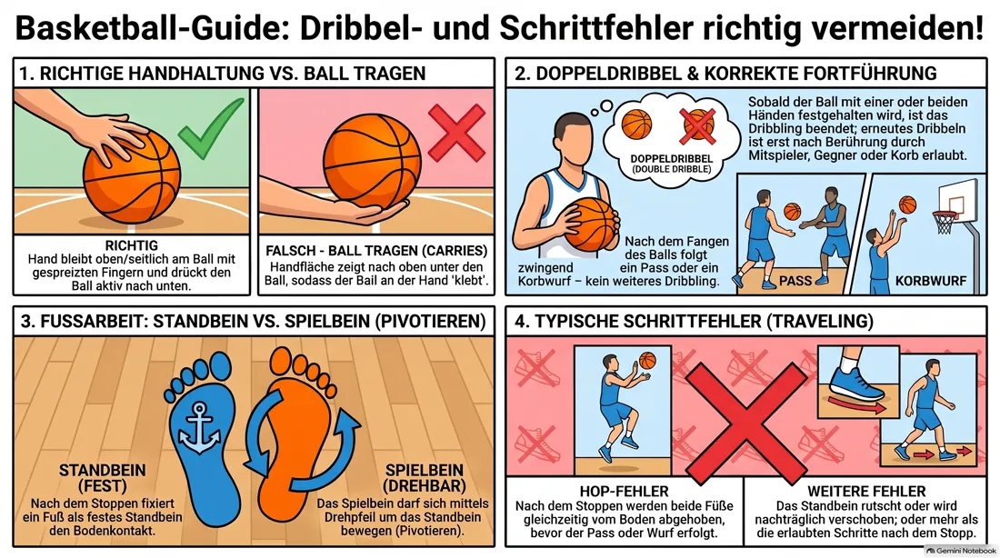
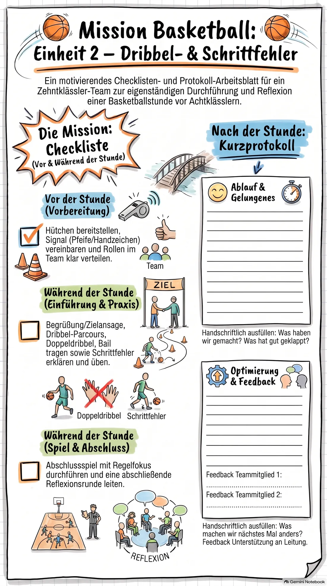

Einsatz 02 · 04 Dribbelfehler und Schrittfehler
Ihr seid heute das Team für die zweite Stunde der Reihe: typische Fehler beim Dribbeln und bei den Schritten. Lest diese Akte vorher einmal in Ruhe durch, am besten gemeinsam im Team.
Ablaufplan (60 Minuten)
-
0–5
Begrüßung
Ziel nennen: „Heute schauen wir uns typische Fehler beim Dribbeln und bei den Schritten an.“
-
5–15
Erwärmung
Dribbel-Parcours mit Richtungswechseln und Hand-Wechsel.
Vormachen, auf beide Hände achten. -
15–30
Hauptteil A: Dribbelfehler
Doppeldribbel und „Ball tragen“ zeigen (bewusst falsch vormachen), dann richtig. Partnerübung: einer dribbelt, der andere beobachtet.
Bewusst übertrieben falsch vormachen, das merken sich alle besser. -
30–45
Hauptteil B: Schrittfehler
Regel erklären: nach dem Stoppen nur ein Stand- und ein Spielbein. Übung: Dribbeln – Stoppen – Pivotieren.
Langsam vormachen, mehrfach wiederholen lassen. -
45–55
Anwendung
Kleines Spiel 3 gegen 3, du pfeifst bewusst jeden Regelverstoß ab.
Ruhig bleiben, Pfeife nur für diese zwei Fehlerarten nutzen. -
55–60
Abschluss
Reflexion: „Welcher Fehler ist euch am häufigsten passiert?“
Beweisfoto: die Fehlerbilder im Bild

So bereitet ihr euch vor
Ihr müsst die Fehlerbilder nicht nur kennen, sondern auch bewusst falsch vormachen können, damit sie bei der achten Klasse hängen bleiben:
- Doppeldribbel: Sobald der Ball mit beiden Händen festgehalten wurde, darf nicht erneut gedribbelt werden.
- Ball tragen: Die Hand darf nicht unter den Ball geraten, sie bleibt oben/seitlich und drückt den Ball aktiv nach unten.
- Schrittfehler: Nach dem Dribbel-Stopp gibt es ein Standbein (bleibt fest am Boden) und ein Spielbein (darf sich drehen).
Sorgt vorher für Hütchen für den Dribbel-Parcours und legt euch eine Pfeife oder ein klares Handzeichen zurecht, um Fehler im Spiel anzuzeigen, ohne ständig zu unterbrechen.
Im Abschlussspiel nur auf die zwei besprochenen Fehler pfeifen, sonst wird das Spiel zerrissen. Manche Achtklässler kennen die Pivot-Regel noch nicht — zeigt den Dreh um das Standbein mehrfach langsam vor, bevor es ins Spiel geht.
Vor der Gruppe stehen — kurz und knapp
Verhaltenskodex
- Stellt euch in einen Halbkreis, sodass ihr alle acht im Blick habt, niemand hinter euch.
- Sprecht lauter und langsamer als sonst, aus dem Bauch heraus, eine Anweisung nach der anderen.
- Legt vorher ein festes Signal fest (z. B. Pfeife einmal = alle hören auf), und wartet danach wirklich, bis es ruhig ist.
- Bei Störungen: ruhig bleiben, die Person direkt und kurz ansprechen, mit Namen und Blickkontakt. Keine lange Diskussion vor der Gruppe.
- Bei größeren Problemen nicht allein durchkämpfen — holt euch Unterstützung aus eurem Team oder sprecht die Sportlehrkraft an.
- Lob nicht vergessen, wenn etwas gut klappt — das wirkt oft mehr als jede Ermahnung.
Euer Checklisten-Auftrag
